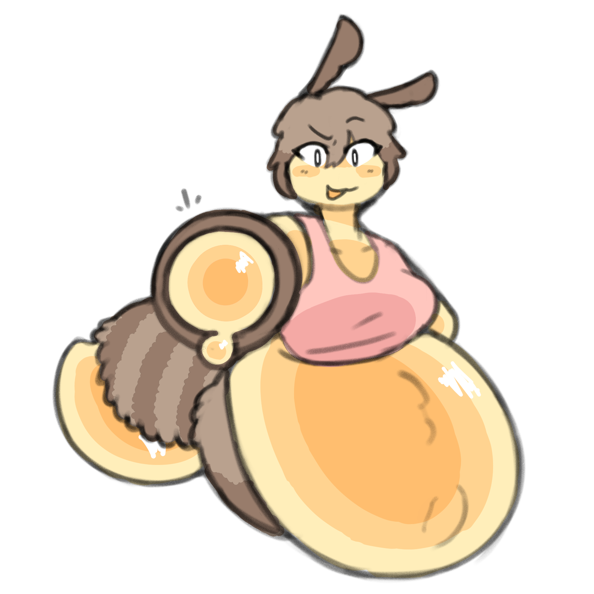
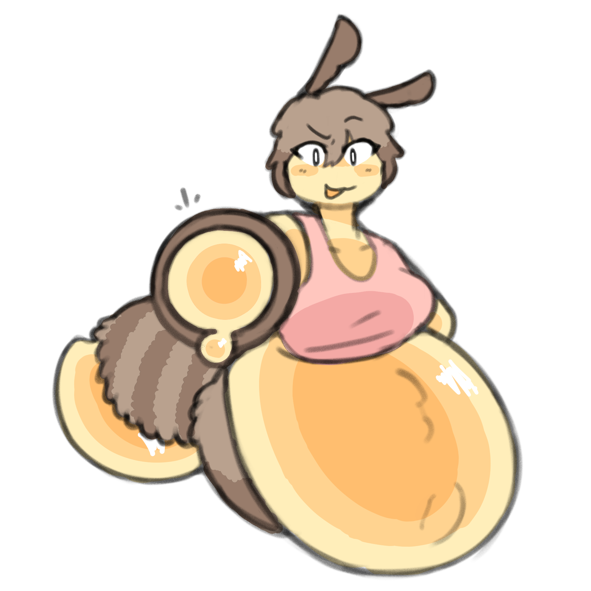

Molly, my beemomma sona
Cuddles every night 'cuz she's romantic and sweet like honey. Speaking of, she produces 5 gal/day 'cuz she's a bee sauce enjoyer. Overall, she's low maintenance but loves you.
Sometimes, she gets too hungry and dips her fingers in her hive's honey barrels — it usually ends up becoming whole handfuls instead of just finger samples though.
Appearance
She has a round belly and tail engorged with honey that she produces. Because of her weight she bumbles into walls when flying. Yes, she's human sized.
Her belly is fuzzy yet translucent; now how does that work?
Diet
Unlike a true bee, Molly is a frugivore and thus her diet consists of entirely sweet fruits. During the colder months her metabolism slows down such that she can't process those fruits. Instead, she produces honey for these times which she stores either in barrels in her hive, or in her stretchy belly.
If she overeats she might get so big that she can't move very well. If she's not near her hive, she doesn't like to waste, so you might have to grab some containers.
Assets
| Honey Handcannon | Deals 5-7 damage and applies the effect Sticky for 1 turn. |
|---|---|
| Molly's Hive | Actually just a repurposed barn. The floor is noticably tacky. |